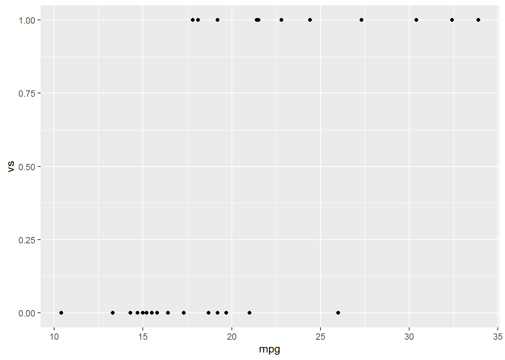
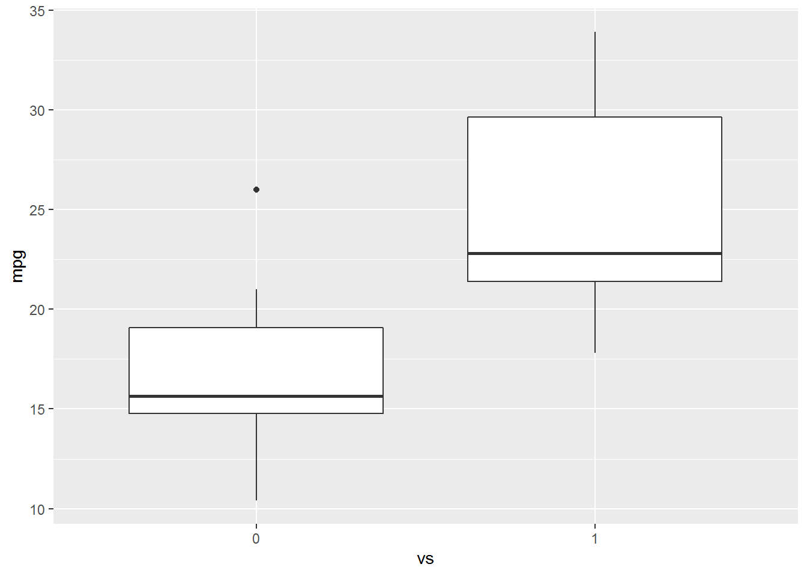
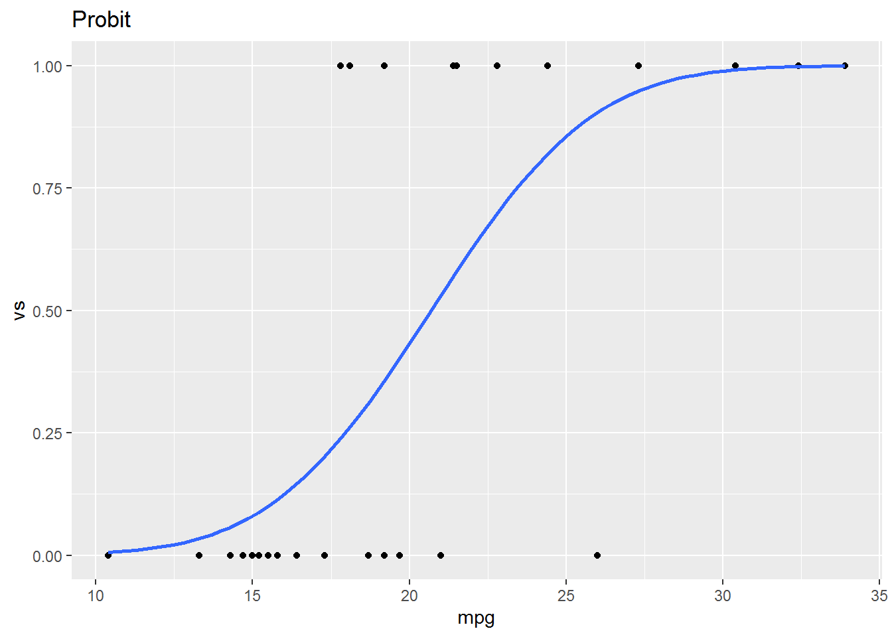
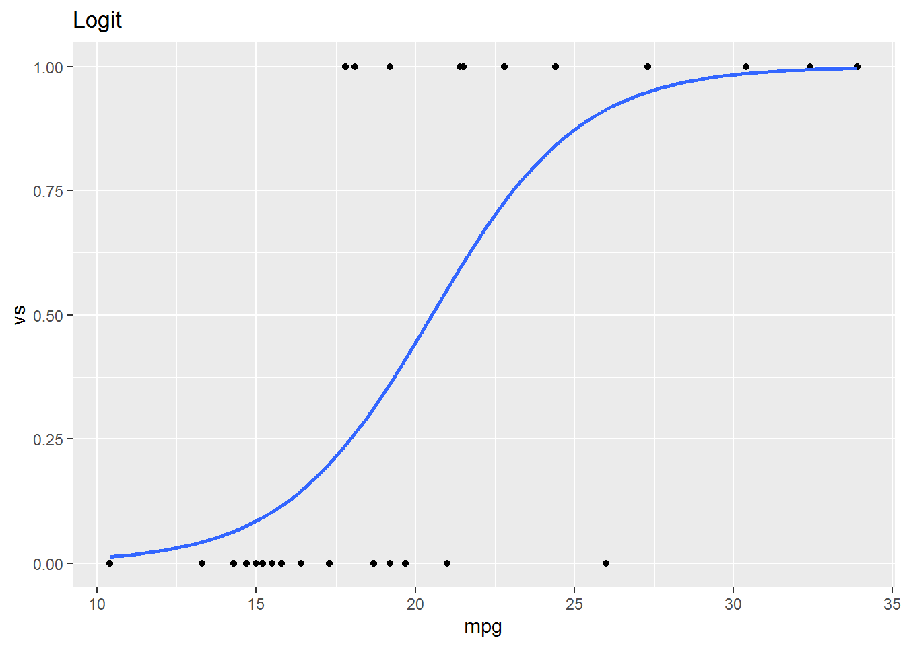

Chapter 14 Dummy Dependent Variables
We will learn techniques in R to estimate and interpret models in which the dependent variable is categorical. In particular we will learn to estimate linear probability models, probit models, and logit models. We will use the libraries below.
14.1 Probit Estimation
The probit model is given by \[Pr(Y_i=1)=\Phi(\beta_0+\beta_1X_{1i})\] where \(\Phi()\) is the standard normal CDF. Let’s make use of the mtcars23 data set to estimate a probit model to determine engine type as a function of mpg. Engine type, vs, is coded as 0 for V-shaped and 1 for straight.
14.1.1 EDA
Let’s look at a scatter plot and a box plot of mpg vs vs.


The boxplot indicates that there is difference in mpg between straight vs v-shaped engines. Note the difference in the code between the two similar calls. We need to treat vs as a factor in the boxplot but not in the scatter diagram.
14.1.2 Estimate the model
Let’s estimate the probit model \(Pr(vs_i=1)=\Phi(\beta_0+\beta_1mpg_i)\). glm is used to fit dummy dependent variable models.24 To estimate the probit model glm requires three arguments: formula, family, and data. You are familiar with the data and formula arguments. The family argument is description of the error distribution. In this case our family argument will be binomial(link = "probit").
# A tibble: 2 x 5
term estimate std.error statistic p.value
<chr> <dbl> <dbl> <dbl> <dbl>
1 (Intercept) -5.09 1.64 -3.10 0.00193
2 mpg 0.246 0.0825 2.98 0.0028614.1.3 Estimated Effects
14.1.3.1 Discrete Difference
14.1.3.1.1 \(X_1\) is Continuous
To estimate the effect of a change in the independent variable on the probability of observing the dependent variable we need to calculate the average difference between the fitted values of the model, P1, and the predicted values of the model when the independent variable we are interested in is changed by one standard deviation, P2.
Fitted values, P1, are easily obtained from the glm object as follows:
The fitted variables have had pnorm() applied to the linear estimates, so they are P1.
To obtain marginal effects, we need to let mpg vary by one standard deviation and obtain the predicted values from the estimated equation. To find P2, the predicted values resulting from a one standard deviation change in the independent variable, we will make use of predict.glm. predict.glm25 will require two arguments to estimate P2, the equation object and the newdata predict.glm(object, newdata = df. Unfortunately the expose pipe %$% does not function with predict.glm, so we will have to create a data frame of the changed independent variable. We will use the dplyr verbs select and mutate to create the new data frame. We calculate P2 below:
# Create the new data
newdata <-
mtcars %>%
dplyr::select(mpg) %>% #I used this form to avoid the conflict with select in the MASS package
mutate(mpg = mpg + sd(mpg))
# Create P2
P2 <-
predict.glm(vs_glm, newdata) %>%
pnorm()
# Marginal Effect
mean(P2-P1)[1] 0.339So, a one standard deviation increase in mpg will yield a 33.89% increase in the probability that the car has straight engine.
14.1.3.1.2 Independent variable is a dummy.
Let’s add am, transmission type, to the model. am is coded as 0 if the car has an automatic transmission and 1 if it has a manual transmission. First, estimate the model \(Pr(vs_i=1)=\Phi(\beta_0+\beta_1am+\beta_2mpg_i)\).
Call: glm(formula = vs ~ am + mpg, family = binomial(link = "probit"))
Coefficients:
(Intercept) am mpg
-7.47 -1.84 0.40
Degrees of Freedom: 31 Total (i.e. Null); 29 Residual
Null Deviance: 43.9
Residual Deviance: 20.3 AIC: 26.3We will follow similar steps as those above to interpret a change from automatic to manual transmission on the probability that the engine is straight. We will estimate P0, the fitted values, when am = 0, and P1, the fitted values when am = 1.
# Estimate the model
vs_am_glm <-
mtcars %$%
glm(vs ~ am + mpg, family = binomial(link = "probit"))
# P0
newdata <-
mtcars %>%
dplyr::select(am, mpg) %>%
mutate(am = 0)
P0 <-
predict.glm(vs_am_glm, newdata) %>%
pnorm()
# P1
newdata <-
mtcars %>%
dplyr::select(am, mpg) %>%
mutate(am = 1)
P1 <-
predict.glm(vs_am_glm, newdata) %>%
pnorm()
mean(P1-P0)[1] -0.269A car with an manual transmission is 26.9% less likely, on average, to have a straight engine, ceteris paribus.
14.1.3.2 Marginal Effects
If \(X_1\) is continuous we can estimate the marginal effects of a change in \(X_1\) as \(\phi(\hat\beta_0+\hat\beta_1X_{1i}+\hat\beta_2X_{2i})\hat\beta_1\). Where \(\phi()\) is the normal PDF. Let’s estimate the marginal effect of mpg on vs using the model above.
marg_effect <-
dnorm(vs_am_glm$coef[1] + vs_am_glm$coef[2]*mtcars$am + vs_am_glm$coef[3]*mtcars$mpg) * vs_am_glm$coef[3]
mean(marg_effect)[1] 0.0692The marginal effect of mpg on type of engine is 0.069.
14.1.3.2.1 mfx and margins Packages
We can use the mfx and margins packages to estimate the marginal effect of a continuous variable directly from the model we estimate. mfx::probitmfx(formula, data, atmean = F) and margins::margins(model) are the respective function calls to estimate marginal effects from the two packages.
Call:
mfx::probitmfx(formula = vs_am_glm, data = mtcars, atmean = F)
Marginal Effects:
dF/dx Std. Err. z P>|z|
am -0.26942 0.09154 -2.94 0.0032 **
mpg 0.06925 0.00765 9.05 <0.0000000000000002 ***
---
Signif. codes: 0 '***' 0.001 '**' 0.01 '*' 0.05 '.' 0.1 ' ' 1
dF/dx is for discrete change for the following variables:
[1] "am"Note that these values are identically to the ones calculated by hand above.
am mpg
-0.3185 0.06925The marginal effect of mpg is the same, while the effect of am is similar. ?margins or An Introduction to ‘margins’ for more on the margins package.
14.2 Logit Estimation
The logit model takes the form \(Pr(Y_i=1)=\frac{e^{\beta_0+\beta_1X_{1i}}}{1+e^{\beta_0+\beta_1X_{1i}}}\) An alternative form of the logit model might be easier to interpret. With appropriate algebraic gymnastics we can write the logistic model as \(\ln(\frac{p_i}{1-p_i})=\beta_0+\beta_1X_{1i}\), where \(\ln(\frac{p_1}{1-p_i})\) is the log of the odds ratio.
Let’s estimate the model from above as a logit rather than a probit. All we need to do is change the link argument to logit to estimate the model.
Call: glm(formula = vs ~ mpg + am, family = binomial(link = "logit"))
Coefficients:
(Intercept) mpg am
-12.705 0.681 -3.007
Degrees of Freedom: 31 Total (i.e. Null); 29 Residual
Null Deviance: 43.9
Residual Deviance: 20.6 AIC: 26.6Suppose we’d like to know the probability that a vehicle with automatic transmission that gets 25 mpg has a straight engine. Calculate the odds ratio as \(\ln(\frac{p_1}{1-p_i})=-12.7051+0.6809*25-3.0073*0 = 4.9474\). Exponentiate both sides and solve for p. \(e^{\ln(\frac{p_i}{1-p_i})} = e^{4.9474}\). We know that an exponentiated natural log is just itself so we have \(\frac{p_i}{1-p_i}=140.808\). Solving for p yields \(p_i=\frac{140.808}{141.808}=.9925\). The probability we are looking for is 99.25%. So, \(\hat p=\frac{e^{\hat\beta_0+\hat\beta_1X_1}}{1 + e^{\hat\beta_0+\hat\beta_1X_1}}\).
14.2.1 Discrete Differences
The discrete-difference can be calculated as the difference in two probabilities. We can estimate the mean change in probability from an increase in mpg of 1.
vs_logit <-
mtcars %$%
glm(vs ~ mpg + am, family = binomial(link = "logit"))
# p1 are the fitted values of the regression
p1 <- vs_logit$fitted
# to calculate p2 add one to mpg and find the predicted values
newdata <-
mtcars %>%
dplyr::select(mpg, am) %>%
mutate(mpg = mpg + 1)
p2 <- exp(predict(vs_logit, newdata))/(1+exp(predict(vs_logit, newdata)))
# calcualte the mean difference between the p2 and p1
mean(p2-p1)[1] 0.0727On average an increase of 1 mpg will increase the probability the car has straight engine by 7.3%.
14.2.2 Marginal Effects
Use the mfx or margins package to estimate the marginal effects of a change in an independent variable.
Call:
mfx::logitmfx(formula = vs_logit, data = mtcars, atmean = F)
Marginal Effects:
dF/dx Std. Err. z P>|z|
mpg 0.0692 0.0453 1.53 0.1267
am -0.2618 0.0941 -2.78 0.0054 **
---
Signif. codes: 0 '***' 0.001 '**' 0.01 '*' 0.05 '.' 0.1 ' ' 1
dF/dx is for discrete change for the following variables:
[1] "am" mpg am
0.06923 -0.305714.3 Testing Hypotheses
Let’s estimate a new probit model \(Pr(vs_i=1)=\Phi(\beta_0+\beta_1am+\beta_2mpg_i+\beta_3hp_i)\) using the mtcars data set and test the hypothesis that our model has overall explanatory power. \[H_0:\beta_1=\beta_2=\beta_3=0\]
vs. \[\text{@ least one }\beta\ne0\]
We an estimate a restricted model and compare the likelihood ratios to the likelihood ratio of the unrestricted model and perform the LR test where \(LR = 2(\log L_{UR}-\log L_R)\text{~}\chi^2_{df}\). Where the df is equal to the number of restrictions or number of equal signs in \(H_0\).
ur_model <-
mtcars %$%
glm(vs ~ am + mpg + hp, family = binomial(link = "probit"))
r_model <-
mtcars %$%
glm(vs ~ 1, family = binomial(link = "probit"))
lr <- 2*(logLik(ur_model)[1]-logLik(r_model)[1])
1 - pchisq(lr, 3)[1] 0.000000302We can reject \(H_0\).
Instead, let’s use lrtest from the lmtest package to test hypotheses about our limited dependent variable models. We can specify the restrictions as an argument in the call.
Likelihood ratio test
Model 1: vs ~ am + mpg + hp
Model 2: vs ~ 1
#Df LogLik Df Chisq Pr(>Chisq)
1 4 -5.36
2 1 -21.93 -3 33.1 0.0000003 ***
---
Signif. codes: 0 '***' 0.001 '**' 0.01 '*' 0.05 '.' 0.1 ' ' 1Let’s test the null hypothesis \[H_0:\beta_2=\beta_3\] \[H_1: \beta_2\ne\beta_3\] The restricted model becomes \(Pr(vs_i=1)=\Phi(\beta_0+\beta_1am+\beta_2(mpg_i+hp_i))\)
r_model <-
mtcars %$%
glm(vs ~ am + I(mpg + hp), family = binomial(link = "probit"))
lmtest::lrtest(ur_model, r_model)Likelihood ratio test
Model 1: vs ~ am + mpg + hp
Model 2: vs ~ am + I(mpg + hp)
#Df LogLik Df Chisq Pr(>Chisq)
1 4 -5.36
2 3 -6.63 -1 2.53 0.11We fail to reject \(H_0\) and conclude that we have no evidence to believe that \(\beta_2\ne\beta_3\).
We would test hypotheses concerning logit models in same way.
14.4 Graphing Probit and Logit Models
mtcars %>%
ggplot(aes(x = mpg, y = vs)) +
geom_point() +
geom_smooth(method = "glm", method.args=list(family=binomial(link = "probit")), se = F) +
ggtitle("Probit")
mtcars %>%
ggplot(aes(x = mpg, y = vs)) +
geom_point() +
geom_smooth(method = "glm", method.args=list(family=binomial(link = "logit")), se = F) +
ggtitle("Logit")